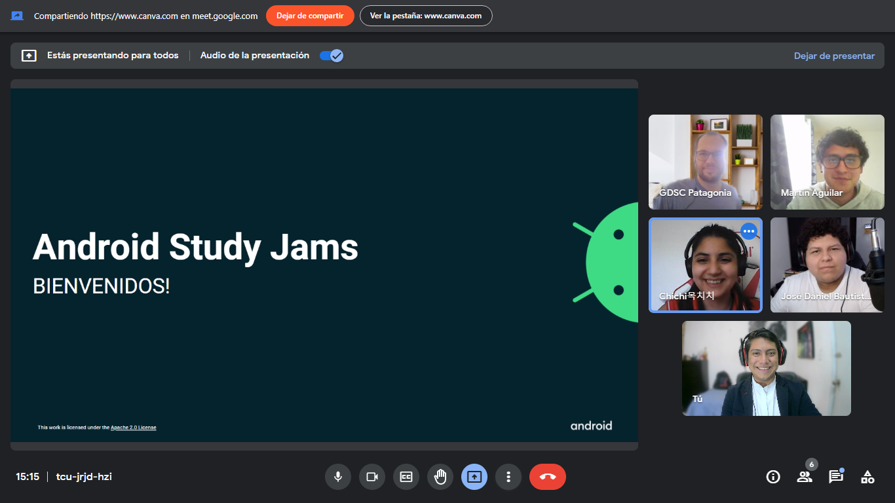
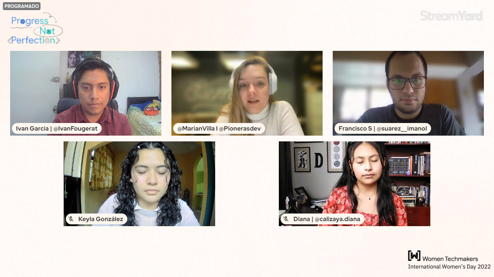

Los Clubes de Estudiantes Desarrolladores de Google son grupos de la comunidad universitaria para estudiantes interesados en las tecnologías para desarrolladores de Google. Los estudiantes de todos los programas de grado o posgrado con interés en crecer como desarrolladores son bienvenidos. Durante el año 2021 fui seleccionado para ser lider en la Universidad Veracruzana y desde ese momento he estado realizando distintos eventos de tecnologia

Latam Conference
Es un magno evento creado por y para estudiantes interesados en las tecnologías de Google de parte de las comunidades GDSC de Latinoamérica.
Go somewhere

Android Study Jams
Un Android Study Jams es un grupo de estudio organizado por la comunidad para que las personas aprendan a crear aplicaciones de Android en el lenguaje de programación Kotlin.
Go somewhere

Women's Day
Queremos invitarte este 8 de Marzo a nuestra edición del Progress Not Perfection, donde tendremos a varias invitadas especiales.
Go somewhere
Flutter Festival
💙Flutter Festival ha llegado a la región de Orizaba este 26 de Marzo del 2021 en el Google Developer Student Clubs Universidad Veracruzana 💙
Go somewhere